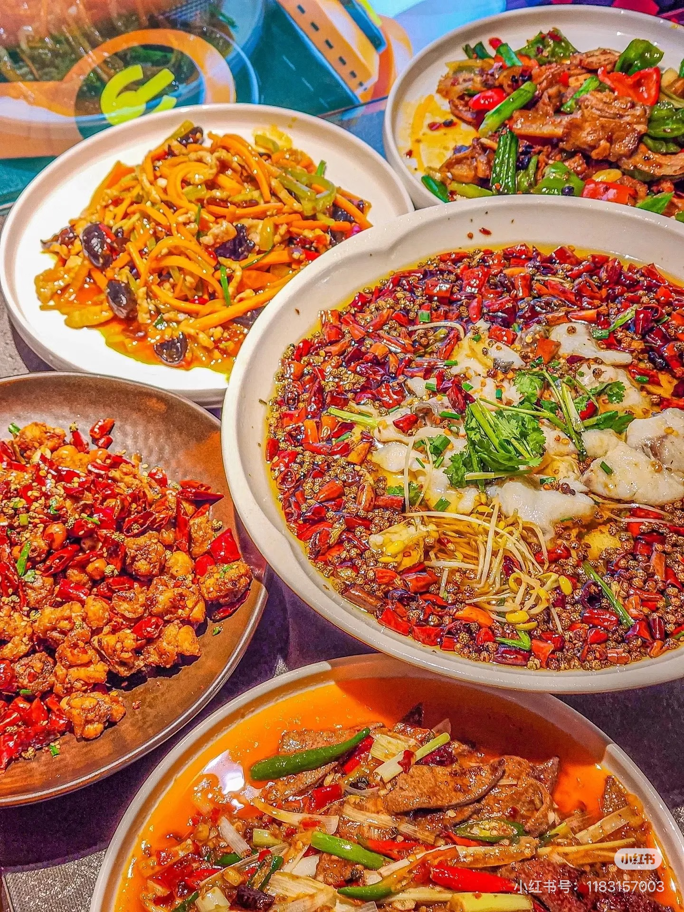
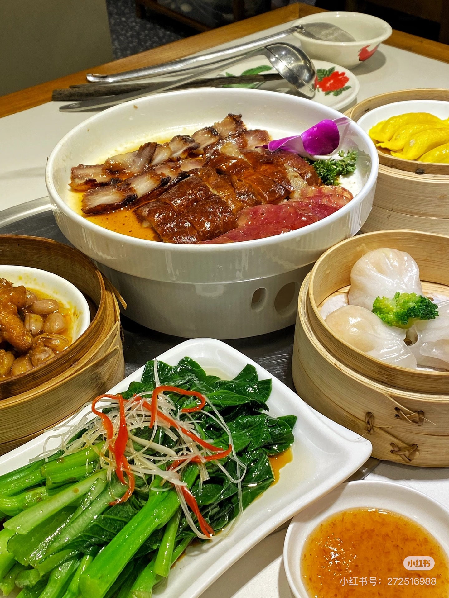
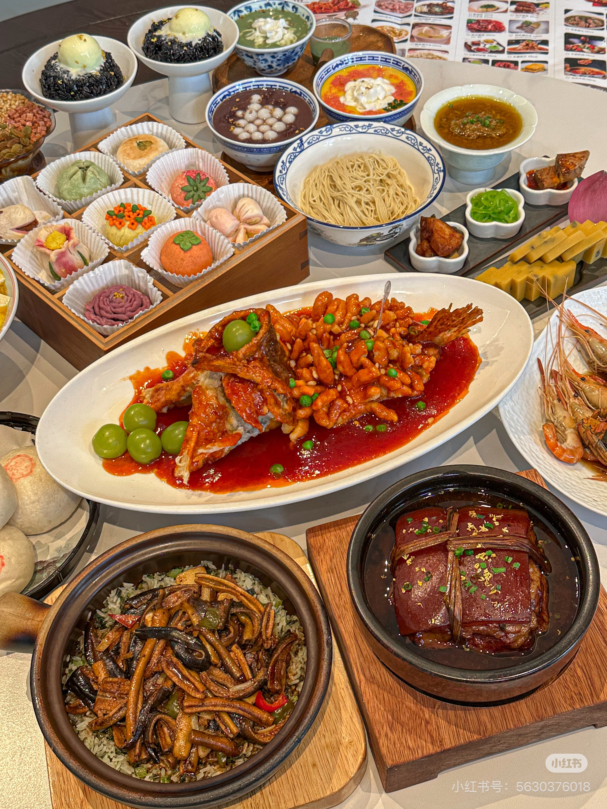
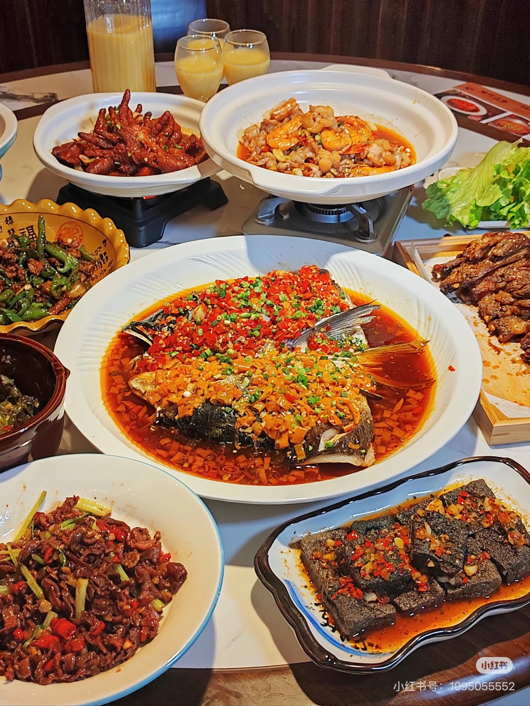
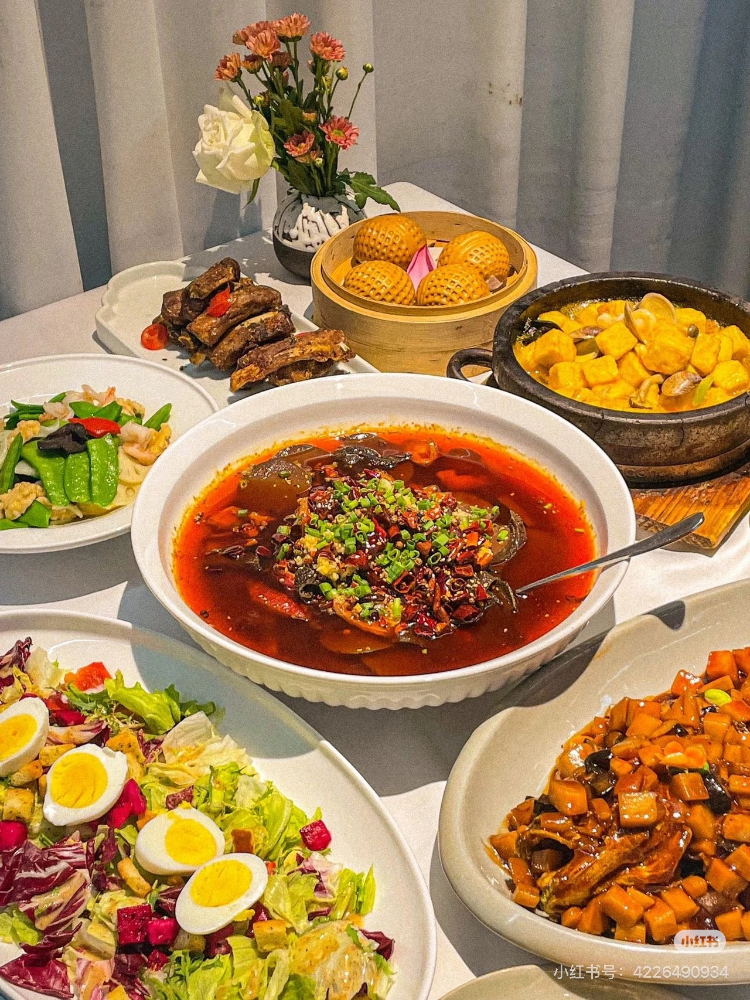
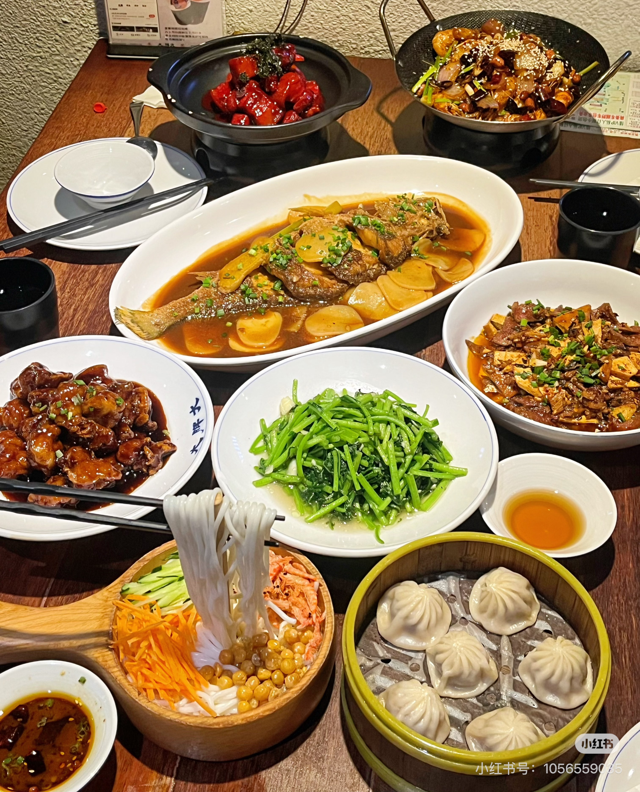

🦆
北京经典传统
北京烤鸭
选用优质北京鸭，经百年秘制工艺烤制，皮脆肉嫩，配荷叶饼、葱段、甜面酱食用，是中华美食的代表之作。
中华饮食文化
八大菜系，百年传承。
跟随我们的足迹，探索中国各地的饮食文化与烹饪艺术。
精选推荐
豆腐软嫩，麻辣鲜香，是四川家庭餐桌上的经典之作。以豆瓣酱、花椒为魂，回味无穷。
皮脆肉嫩，原汁原味，蘸以姜蓉葱油，尽显粤菜清淡鲜美的精髓所在。
刀工精湛，形如松鼠，外酥里嫩，酸甜适口，是江苏菜肴中的艺术珍品。
鲜辣酸香，湘菜代表。剁椒的火红热烈，鱼头的鲜嫩，成就了这道豪放之作。
按地区探索
每一种菜系都承载着一方水土的独特记忆
麻辣鲜香
清淡鲜美
精细雅致
辣鲜酸香
咸鲜醇厚
鲜嫩软滑
汤鲜味美
重油重色
不可错过
选用优质北京鸭，经百年秘制工艺烤制，皮脆肉嫩，配荷叶饼、葱段、甜面酱食用，是中华美食的代表之作。
阳澄湖大闸蟹，秋日必尝的饕餮盛宴。蟹黄饱满，蟹肉鲜甜，配以姜末醋，蘸食最佳。
虾饺、烧麦、叉烧包……广式早茶不仅是一顿早餐，更是一种生活仪式，承载着南粤饮食文化的精华。
每道美食背后都有一段故事。欢迎在留言板中分享你与中国美食的难忘记忆，与全国食客共鸣。
REGIONAL CUISINE
中国地大物博，各地物产与气候造就了截然不同的饮食风格。点击菜系卡片，深入探索各地美食与食谱。

四川 · 重庆
以麻、辣、鲜、香著称，善用辣椒、花椒、豆瓣酱，"食在中国，味在四川"。

广东 · 香港 · 澳门
以清淡鲜美著称，讲究原汁原味。广式早茶文化举世闻名，顺德更获"世界美食之都"。

江苏 · 南京 · 苏州
宫廷菜重要来源，刀工精细典雅，口味清淡偏甜，淮扬菜被誉为"东方美食"代表。

湖南 · 长沙 · 湘西
纯粹的辣，带有酸香，善用剁辣椒与腊肉，"无辣不欢"是湖南饮食的真实写照。

山东 · 济南 · 青岛
八大菜系之首，历史最悠久，咸鲜醇厚，官府菜代表，对其他菜系影响深远。

浙江 · 杭州 · 宁波
清鲜嫩滑，善用龙井茶、西湖食材，讲究色香味形俱全，"江南饮食文化"代表。
CLASSIC RECIPES
精选中国各地传统名菜，详细步骤让您在家复刻地道中华美味。
经典川菜，麻辣鲜香，豆腐嫩滑
皮脆肉嫩，百年传统工艺
酸甜可口，鱼肉鲜嫩
肥而不腻，软糯入味
鲜甜弹牙，原汁原味
皮薄馅大，年节必备
未找到相关菜谱，请尝试其他关键词
FOOD CULTURE
中国饮食文化绵延五千年，蕴含着哲学、艺术与生活智慧，是中华文明的重要组成部分。
民以食为天
中国有着世界上最悠久、最多元的饮食文化传统。从《礼记》中的饮食之礼，到《随园食单》中的烹饪之道；从宫廷的精致珍馐，到民间的家常便饭，饮食贯穿了中国人生活的方方面面。
"民以食为天"这句古语，深刻道出了饮食在中国文化中的核心地位。不同于西方饮食文化中对营养的强调，中国人更注重饮食的"道"——阴阳调和、五味平衡、天人合一。
"夫礼之初，始诸饮食。"
——《礼记》
中华饮食哲学
酸、甜、苦、辣、咸——五味相生相克，是中国烹饪的核心哲学
入肝，开胃生津，对应木性。醋、柠檬、酸菜皆为代表。
入脾，补气益血，对应土性。糖、蜜、甜面酱皆为代表。
入心，清热解毒，对应火性。苦瓜、茶叶皆为代表。
入肺，驱寒除湿，对应金性。辣椒、花椒、姜皆为代表。
入肾，软坚散结，对应水性。盐、酱油、豆豉皆为代表。
历史沿革
中国先民开始种植粟、稻等作物，驯化猪、鸡等家畜。陶器的发明使烹饪成为可能，奠定了中国饮食文化的物质基础。
周代形成了完整的饮食礼制，"食不厌精，脍不厌细"的饮食观开始萌芽。青铜器的出现使烹饪器具更加精美，宴飨礼仪成为国家礼制的重要组成。
张骞出使西域，带回胡椒、芝麻、葡萄等食材，极大丰富了中国饮食的食材库。唐代长安成为国际美食都市，胡食与汉食相互融合，烹饪技法得到空前发展。
宋代市井饮食文化繁荣，饭馆、酒楼遍布城市。明清时期，八大菜系的雏形逐渐形成，袁枚《随园食单》系统总结烹饪理论，将中国饮食文化推向高峰。
节令饮食
GUESTBOOK
分享你与中国美食的故事，让更多人感受食物带来的温暖与记忆。
请输入昵称（2-20个字符）
请输入有效的邮箱地址
请输入留言内容（10-300个字符）
在成都吃到正宗的麻婆豆腐，那一刻感觉人生圆满了！豆腐嫩如豆花，麻辣刺激，和家里做的完全不同境界。
每个周末和家人一起去茶楼饮茶，虾饺、肠粉、叉烧包……这种仪式感是广东人生活的一部分，外地朋友来一定要体验！
这个网站做得真好！让我重新认识了家乡的鲁菜文化，没想到葱烧海参背后有这么丰富的历史渊源。